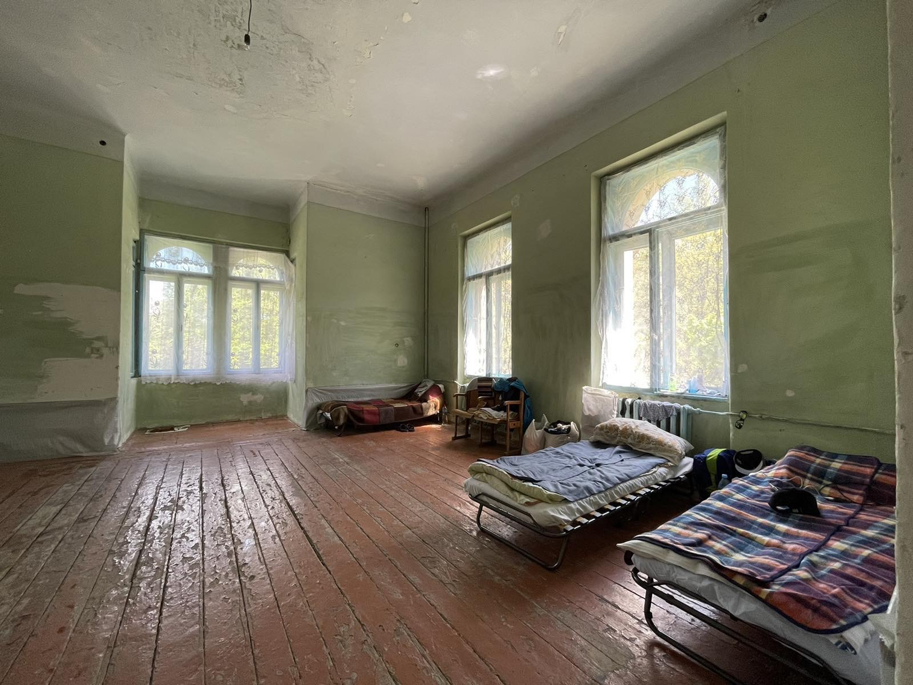

Sonderaktion Ukraine
Was wird gebraucht?
Unsere Listen, welche Dinge gerade am nötigsten gebraucht werden, bekommen wir immer direkt aus der Ukraine. Für die Sonderaktion jetzt aus Lwiw. In der Stadt kommt seit Kriegsbeginn abertausende Flüchtlinge an, momentan besonders aus dem Osten der Ukraine, wo die Front verläuft. Es herrschen Chaos, Elend und Verzweiflung. Nahrungsmittel, Medikamente, Wohnraum - es gibt von allem viel zu wenig.
Besonders leiden die Schwächsten: Die Kinder. Viele sind Kriegswaisen oder haben den Kontakt zu ihren Eltern verloren, fast alle sind traumatisiert, teilweise unterernährt.
Eine Ärztin, Khrystyna, versucht, zusammen mit einer Kollegin und vielen weiteren Freiwilligen, zu helfen, wo es geht: Sie schaffen Unterbringungen, sie sorgen für Betreuung, sie besorgen Lebensmittel, sie organisieren die Suche nach Verwandten. Direkt zu Khrystyna haben wir Kontakt, und von ihr haben wir die dringende Bitte um Hilfe erhalten.
Und diese Bitte möchte wir gern so gut und so schnell erfüllen, wie es uns nur irgendwie möglich ist. Wir müssen da unterstützen!
Was passiert mit den Spenden?
Sachspenden werden zentral gesammelt, sortiert und von uns
nach Polen transportiert. Dort haben wir über private Verbindungen einen
Kontaktmann (Jacek) bei einer Spedition. Hier wird auf einen ukrainischen
LKW umgeladen Der Fahrer ist ebenfalls ein persönlicher Kontaktmann
(Lyubomir). Er sorgt für die Verwendung der Materialien. Alles, was in
dieser Aktion gesammelt wird, bringt er direkt nach Lwiw zu Khrystyna.
Geldspenden werden für Einkauf der oben genannten
Materialien verwendet. Vor allem medizinische Güter müssen im Fachhandel
beschafft werden. Aber auch z.B. Nahrungsmittel lassen sich im Großhandel
besser einkaufen. Sind die Materialien hier eingekauft, gehen auch sie im
LKW via Polen in die Ukraine.
Dokumentation: Auf unseren Webseiten gibt es reichlich
Bilder dazu, wie unsere Lieferungen in Polen und dann der Ukraine ankommen
und dort verteilt, ausgepackt, verwendet werden. Es gibt auch ein Video aus
einem Kinderheim.
Abgabezeit und -ort der Spenden:
Sonntag, 22. Mai, 14:00 – 18:00
Werkstatt Unna (Victoriastraße 17, 59425 Unna)
Benötigte Hilfsgüter:
Textilien
- Kinderkleidung (3 bis 16 Jahre) für Frühjahr und Sommer
- Schuhe / Unterwäsche
- Kinderhandtücher
- Bettwäsche / Decken / Kissen / Bettlaken
Drogerieprodukte
- Waschmittel
- Hygieneartikel f. Kinder (Zahnbürsten, Zahnpasta, Seife, Shampoo)
Medizinisches
- Sämtliche Kindermedikamente (Salben / Sprays / Tropfen…)
Nahrungsmittel
- Milchpulver / Müsli / Frühstücksflocken / Gries / Haferflocken …
- iggerichte f. Kinder
- Müsliriegel / Obstriegel / Süßigkeiten …
Spielzeug und Co.
- Spielzeug und Kuscheltiere
- Bilder / Spielteppiche / Matten / Kinder-Deko
Für die Tiere
- Tierfutter (besonders Hunde und Katzen) und Tiermedizin
Wer spricht hier?
Arne Schulte-Altedorneburg, für die Ukrainehilfe-Unna.
Bitte,
schickt diesen Aufruf weiter, teilt ihn, erzählt es Euren Freunden, hängt ihn aus, verteilt ihn, vervielfältigt ihn…
Vielen, vielen Dank
Für Eure Spenden, Eure Unterstützung, Eure Weiterleitung etc.! Es ist toll, was wir bewegen können, wenn wir endlich mal alle an einem Strick ziehen! Lasst uns sehen, dass wir dieses Gefühl nicht wieder vergessen, dann kann diese Krise auch einen positiven Aspekt haben! Danke!